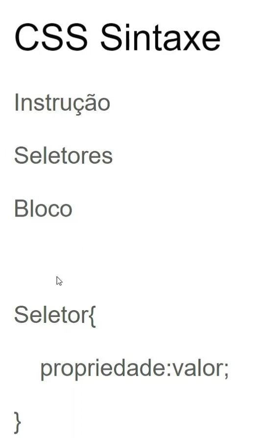

CSS - Cascading Style Sheet
O Cascading Style Sheets (CSS) foi proposto pela primeira vez em Outubro de 1994, por Hakon Lie, que queria
facilitar a programação de sites, que na época era muito mais complexa. As pessoas tinham que utilizar mais
códigos para chegar a um resultado simples, como criar uma tabela.CSS (Folha de Estilo em Cascata) é o código
que você usa para dar estilo à sua página Web
Em 1995 eles apresentaram sua proposta e finalmente, o W3C – World Wide Web Consortium – que estava acabando de
nascer, se interessou pelo projeto e resolveu criar uma equipe, obviamente liderada por Håkon e Bert Bos.
O resultado apareceu logo, em 1996, eles lançaram a recomendação oficial pelo W3C do CSS Level 1 (CSS 1).
Dois anos depois, no dia 12 de Maio de 1998, eles lançaram a recomendação do CSS de nível 2. A segunda versão
das Folhas de Estilo para web.
O nível 3 do CSS ainda está em desenvolvimento. Mas, sabemos que as facilidades serão muitas, como por exemplo,
criar bordas arredondadas sem o uso de imagens, ou definir duas imagens como background de um mesmo objeto.

A tag style (onde você define seu css) dentro do html (acima da dobra) é indicada para a parte do site antes de rolar a tela.
O ideal é usar o arquivo css externo.
Podemos usar o css inline também e ele é o mais indicado , pois para renderização da página ele é muito mais rápido.
Os maiores frameworks utilizam o css inline.
Forma de agrupar e classificar elementos:
O atributo global class especifica uma ou mais classes para o elemento HTML. Esse atributo pode ser reutilizado,
ajudando a pessoa desenvolvedora a não repetir códigos, além de permitir o uso de diferentes classes
simultaneamente.
O atributo Id especifica uma identificação única para o elemento HTML. Por questões de boas práticas, não deve
ser reutilizado e nem conter espaços em seu nome, pois o navegador irá identificar o espaço como parte dele,
já que os elementos não podem ter mais de um Id.
Regras de cascata: tag - class - id . As regas do css: primeiro o arquivo, depois o style e por fim inline.
Color
A propriedade color do CSS definine o valor da cor de um elemento com seu conteúdo em texto e seus decorações (estilos).
Formas de representação de cores
- color: rebeccapurple;
- color: #00ff00;
- Cores com valores Hexa-decimais,ou seja de 1 à 15, sendo de 0 à 9 normais,mas de 10 à 15
são as letras do alfabeto , logo de "a" à "f".
- color: rgb(214, 122, 127) /rgba(34.6 12 64 / 30%);
- Valores "rgb" ou "rgba",
ou seja, o primeiro é vermelho, o segundo é verde e
o terceiro é azul, o "a" é o nível de transparência da cor,
e vai de 0 à 1;
- color: hsl(30, 100%, 50%); /hsla(30, 100%, 50%, .3);
Valores "hsl()", sendo hsl(num da cor"1-369", saturação"0-100", luminosidade"0-100")
- color: hwb(1.5708rad 20% 10% / 0.7);
Aspectos do Fundo - Background
- background-color:propriedade define a cor de fundo de um elemento. O plano de fundo de um elemento é
o tamanho total do elemento, incluindo preenchimento e borda (mas não a margem).
- background-image:propriedade define uma ou mais imagens de plano de fundo para um elemento.
O plano de fundo de um elemento é o tamanho total do elemento, incluindo preenchimento e borda (mas não a margem).
- background-position: propriedade define a posição inicial de uma imagem de fundo.
- background-size:propriedade especifica o tamanho das imagens de fundo. Existem quatro sintaxes diferentes que você
pode usar com esta propriedade: a sintaxe da palavra-chave ("auto", "cover" e "contain"), a sintaxe de um valor
(configura a largura da imagem (a altura se torna "auto"), a sintaxe de dois valores (primeiro valor: largura da
imagem, segundo valor: altura) e a sintaxe de fundo múltiplo (separada por vírgula).
- background-repeat:propriedade define se/como uma imagem de fundo será repetida.Por padrão, uma imagem de fundo
é repetida verticalmente e horizontalmente. Posição padrão é o top-left, top-center,
top-rigth, center-center, center-bottom, center-top
- background-origin: propriedade especifica a posição de origem (a área de posicionamento do plano de fundo) de uma imagem
de plano de fundo.Esta propriedade não tem efeito se o anexo em segundo plano for "fixo".
- background-clip:propriedade define até onde o fundo (cor ou imagem) deve se estender dentro de um elemento.
- background-attachment :propriedade define se uma imagem de plano de fundo rola com o restante da página ou é fixa.
100 vh - significa que está ocupando 100% da view port